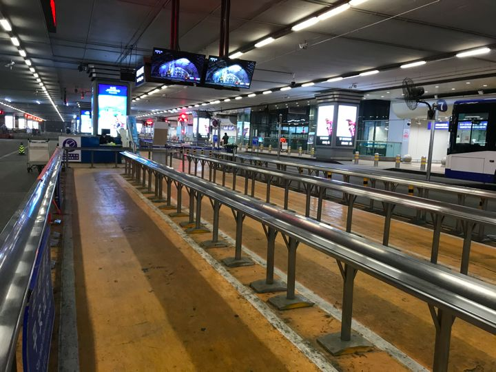
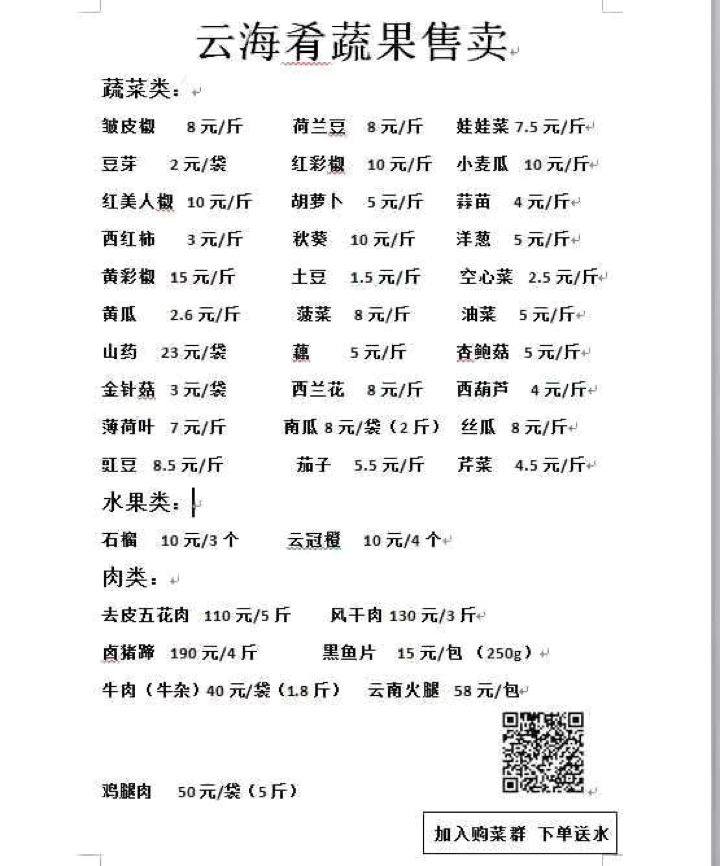
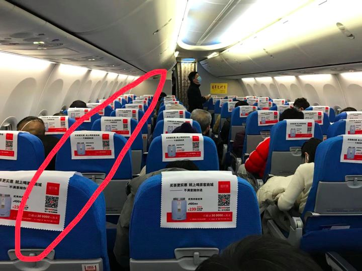
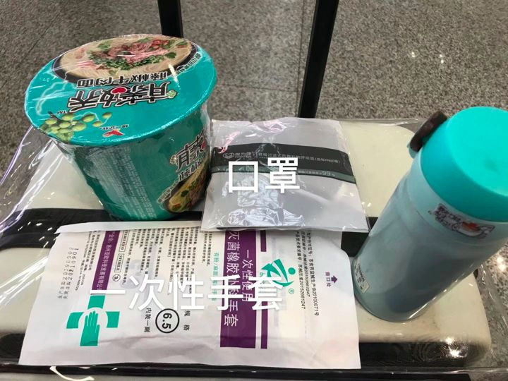
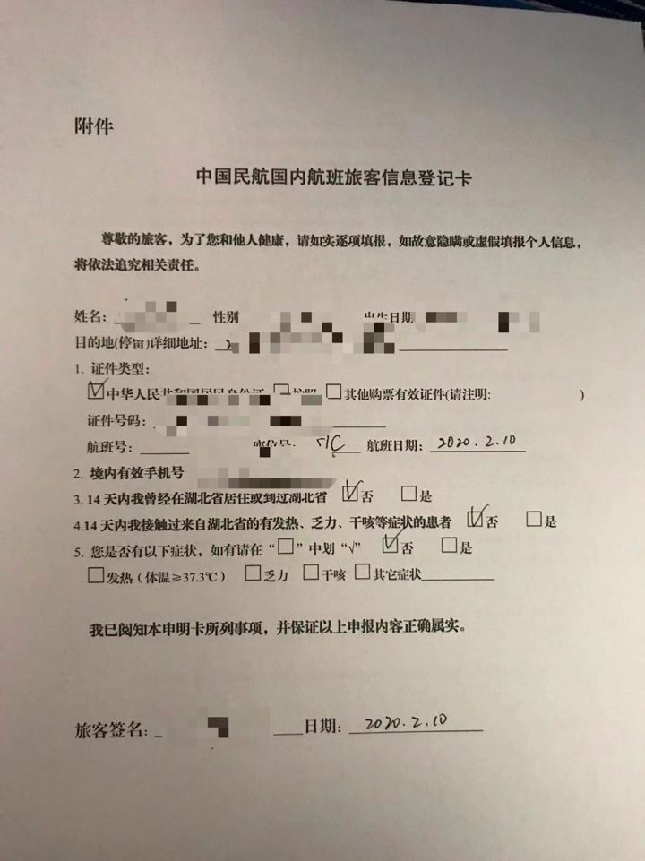

疫情中的复工族：希望生活早日回到正轨
原文链接 备份链接 _ “不知道那些曾经一起抢出站闸机的人，现在正在遭遇什么？只希望这场疫情早点儿过去。” _ 文 |《财经》记者 王丽娜 袁满 编辑 | 朱弢 疫情之下，每个人的生活都有变化。即便是距离疫情爆发中心武汉千里之外的北京。 …
每年春运，对我这种十八线小县城在京打工者而言，返京都是一项大难题。从县城到省城到首都再到家，抢票、避高峰、算时间、挤地铁，每一段路程都足以令人精疲力尽。今年尤甚。
这是一年特殊的春运，我们不再因人流量巨大而恐慌，但病毒令人却步。
家里人很担心我的出行，尤其在看到一条“北京西站防控疫情失败”的视频后。视频中，车站出站口大量旅客涌入，很多人没戴口罩，体温检测人员被挤到一边。
好在，这条视频被证实是假的。
他们仍担心路上的人流。
1月31日，北京市政府发文，除必需行业外，各企业灵活安排工作，将上班时间推迟至2月10日。物流、O2O保障性行业定于2月10日全面恢复生产，在京互联网企业如字节跳动、美团、京东、搜狗等均将春节复工日期暂定为2月10日。
2月10日左右，预计将有大批人员进京复工。
春运开始14天，通过铁路民航出京的人员超过1000万，从订票数据来看， 2月2日至2月18日（春运最后一日）铁路进京旅客总人数206.02万人次，民航进京旅客总人数71.42万人次。除开已订票旅客，还将有潜在回京旅客，会逐步订票回京。
移动——是新冠病毒肆虐的大好机会，因此复工潮被认为将加大感染几率。已在家待过14余天的我，确定未曾感染，那么，如何把自己完好地送至北京，我与家人都十分担心。
带着种种担心，2月10日，我启程从湖南返回北京。2月10日是复工第一天，大批人马已于此前的2月8日、2月9日抵京，错峰出行的我并未感受到大波人流。
另一个原因可能是大型互联网企业以及员工人数众多的生产加工实业型企业，选择了延期开工。譬如字节跳动于2月9日决定，外地员工需在2月12日至16日尽快返京，并自行隔离14天，最迟复工时间暂定3月1日。而已经返京或者北京本地的员工，于2月3日开始线上办公，其中已经完成14天自行隔离的，2月10日到岗，未完成的则依情况顺延。
企业分批复工，为我的错峰提供了可能，因而我的旅途很顺畅。（在此提醒返程者，注意各企业到岗复工时间，尽量错峰。）
从县城老家一路开车前往长沙黄花机场，高速上除了奔跑的运输卡车，就只有几辆私家车在细雨中奔驰。长沙市区内也畅通无阻，车辆极少。原本平时四个多小时的路程，我们只用了不到四个小时就完成了。
县城内路段部分封禁，县城至省城长沙的客运、火车等公共交通都暂未开通，我市至北京的直飞飞机被取消，长沙直达北京的高铁只剩一趟……待在家的我一度发愁如何返京，每一段路程都反复考虑，并打听外地车辆入长沙是否有限制。最终我选择自驾至长沙，然后飞机回北京，尽量减少在外暴露的时间，减少与人接触的可能。
预期的囧途并未到来，没想到一切畅通。
飞机一程也很畅通。原定下午六点起飞，八点二十到达的飞机，提前三分钟起飞，七点四十五就到达了北京。而这趟航班以往的准点率是64%。
与畅通相对应的是静。
2019年完成旅客吞吐量299.7万人次、运输起降2.2万架次、客流量超8万人次的天数达8天之多的黄花国际机场，今年显得格外冷清。值机柜台减少，工作人员戴着口罩、手套，为自己准备着喷洒消毒用的酒精。机场内的店铺关了一大半，导购员在店内都戴着口罩，守着根本无人问津的店子，饭馆虽然开着，但用餐人数明显减少。
不仅黄花机场，最近一周，航空公司大幅削减航班，航班总量仅相当于2019年春运期间的一半，客座率不足45%，去年同期的旅客客座率达到90%。
到达首都机场后，也是一片静默。大家安静地等待着自己的行李，极少交谈。机场往返市区的大巴车减少至两三辆，在等待出租车处，以往即便是平日都大排长龙，如今却根本不用排队，车比人多。

空无一人的打车区
回家的路上，经过朝阳大悦城，才9点，曾经人声鼎沸、灯火通明的大悦城早已熄灯。它的营业时间已调整为：11：00至18：00，并推出云逛街服务。而早前，我曾在微信群看到大悦城云海肴售卖蔬果的消息，餐饮行业所受影响可想而知。
街道也很静。司机师傅看了旁边空荡荡的公交车一眼，对我说：“你看， 都没人。”

已熄灯关门的朝阳大悦城

云海肴的“菜单”（微信群图片）
返京的另一个关键词是“隔离”。
公共场所的程序严谨令我安心。
由黄花机场至首都机场，光是体温检测就要经历四道：进机场体温枪-过安检红外检测-上飞机体温枪-下飞机红外检测，如果你选择地铁回家，那么进地铁前还要经历一道红外检测。到小区后，保安还会手持体温枪等待你的到来。
如果有发热患者，基本无可能成漏网之鱼。
公众的自觉自知也令人安心。因为人流量小，在机场大厅，戴口罩的乘客们都自动隔离而坐，无人扎堆聚集。还有人穿着雨衣以做防护。
飞机上的隔离也做得很到位。人人都必须戴口罩之余，飞机并未满票售出，而实行分散售票，将乘客分隔开来。我所乘坐的飞机是一排六座，左右各三坐，中间是走廊，人与人之间都隔出一个座位或走廊。
这是交通运输部所做出的要求：控制交通运输工具客座率，为乘客隔位、分散就坐提供空间，同时在交通运输工具的后部区域，预留一部分空间作为突发情况时的暂时隔离区域，避免交叉传染。长途国际航班一定要用餐时，要采取临近座位的旅客分批就餐的方式，避免交叉感染。

除此之外，个人防护也十分必要。
我为自己准备了两副口罩，进入飞机后就戴两层（因为是封闭空间），还准备了外科一次性手套，减少手与外界接触。自带水杯，买了一桶方便面，不吃外面的东西。上飞机后，飞机餐食由热食调整为点心和矿泉水，但我还是没有吃。就我观察，大部分乘客都选择不吃。
飞机广播提示道：民航飞机客舱2-3分钟置换一次空气，飞机通风系统降低了病毒扩散可能性。这让戴着两层口罩的我，有种努力没白费的感觉。

下飞机后，我选择打车回家，减少公共接触。在上车时，看到这样一幕：一家三人带着一个孩子，被出租车司机拒载，说坐不下。
后经司机师傅解释，我才明白：这段时期，乘客不允许坐副驾，对乘客负责，也是对司机负责。
师傅又说：我们每天出车、收车，车子都得消毒，有乘客在车上时，前后窗得各开一扇，保持通风。
我点了点头。
小区门口也设置了消毒区，测完体温后，我填写了返京人员登记卡，写明了从何处来、航班号、有无不适症状等。这张表，我在飞机上也填过。

到家后，我将所有衣物放到阳台吹晾，掏出在首都机场买的一瓶56度红星二锅头，开始给箱子和自己消毒（因为买不到酒精）。
抗疫，是一场对手在暗处的斗争。我们必须做到每一个细节，才有可能战胜这个看不见的敌人。
*除网络图片外，其余图片系作者拍摄
原文链接 备份链接 _ “不知道那些曾经一起抢出站闸机的人，现在正在遭遇什么？只希望这场疫情早点儿过去。” _ 文 |《财经》记者 王丽娜 袁满 编辑 | 朱弢 疫情之下，每个人的生活都有变化。即便是距离疫情爆发中心武汉千里之外的北京。 …
原文链接 备份链接 _ 2月10日这个周一，中国多个省市迎来了春节后第一个工作日，虽然比原定假期已推迟一周，但政府、企业和个人所面临的疫情防控压力都不小。当前，湖北省仍需要着力抓好疫情防控，其他地区也需要做好防控的同时有序恢复生产 _ …
原文链接 备份链接 _ “不知道那些曾经一起抢出站闸机的人，现在正在遭遇什么？只希望这场疫情早点儿过去。” _ 文 |《财经》记者 王丽娜 袁满 编辑 | 朱弢 疫情之下，每个人的生活都有变化。即便是距离疫情爆发中心武汉千里之外的北京。 …
原文链接 备份链接 春节假期已经结束，各地陆续迎来了返程高峰。相比其他公共交通工具而言，飞机客舱内的空间更封闭，这是否增添了病毒传播的可能性？ 武汉天河机场医疗急救中心副主任医师田剑清告诉本刊记者，飞机的垂直空调通风系统可最大程度规避传 …
原文链接 备份链接 2020年1月29日上午9点41分，“杭州发布”通报，1月28日杭州新增确诊人数19名，其中有2名，正是来自1月24日新加坡酷航的TR188航班。 该航班1月24日从新加坡樟宜机场飞往杭州萧山机场，当航班抵达的第二天， …